BJT and MOSFET Problem Sets#
Two textbooks were read for every worked example and every problem on transistor circuits: Razavi, Fundamentals of Microelectronics (chapters 4 to 7, 9 and 10: worked examples and end-of-chapter problems), and Sedra/Smith, Microelectronic Circuits, eighth international edition (chapters 4 to 8: in-chapter exercises and end-of-chapter problems). That gives 1219 items. Each was sorted by what it asks. The 19 natures below are asked of both transistors in both books.
Every nature starts with the circuit, drawn with a BJT and with a MOSFET. Then comes one solution as a table: each row is one step, with the BJT line next to the matching MOSFET line. The numbers are those of one example or exercise per transistor, named under the table, and every result agrees with the one the book states. The last table of a section lists every example and problem of that nature.
Overview#
The number of examples and problems of each nature, by book and transistor.
Every one of these examples and problems is solved step by step in the problem bank: One Transistor, Bias, Amplifier Stages, Cascodes and Current Mirrors, Differential Pairs, Other Items.
Nature |
Razavi, BJT |
Razavi, MOSFET |
Sedra/Smith, BJT |
Sedra/Smith, MOSFET |
|---|---|---|---|---|
Bias Point and Region of Operation |
57 |
20 |
48 |
28 |
Device Law and Scaling |
12 |
15 |
30 |
24 |
Small-Signal Parameters |
29 |
27 |
36 |
38 |
Divider Bias with Degeneration |
9 |
10 |
22 |
23 |
Self-Bias |
6 |
5 |
5 |
6 |
Common-Emitter and Common-Source Stage |
7 |
6 |
18 |
12 |
Stage with Emitter or Source Degeneration |
9 |
5 |
8 |
6 |
Stage with a Transistor as its Load |
4 |
15 |
3 |
9 |
Common-Base and Common-Gate Stage |
11 |
5 |
16 |
12 |
Emitter Follower and Source Follower |
11 |
5 |
9 |
7 |
Resistance Seen at a Node |
15 |
5 |
5 |
3 |
Complete Stage with Bias, Source and Load |
49 |
40 |
20 |
18 |
Cascode |
40 |
25 |
9 |
20 |
Current Mirror |
22 |
10 |
15 |
15 |
Differential Pair: Bias and Input Range |
19 |
19 |
11 |
15 |
Differential Pair: Differential Gain |
9 |
10 |
9 |
11 |
Differential Pair with Degeneration |
10 |
3 |
14 |
3 |
Differential Pair: Common-Mode Rejection |
8 |
5 |
19 |
15 |
Differential Pair with Current-Mirror Load |
2 |
9 |
6 |
17 |
All |
329 |
239 |
303 |
282 |
One Transistor#
Bias Point and Region of Operation#
The input voltage is fixed. Find the currents and the output voltage, and decide whether the transistor is in its amplifying region: the active region of a BJT, the saturation region of a MOSFET. Stages with pnp or PMOS devices and dc circuits of several transistors are solved with the same lines.
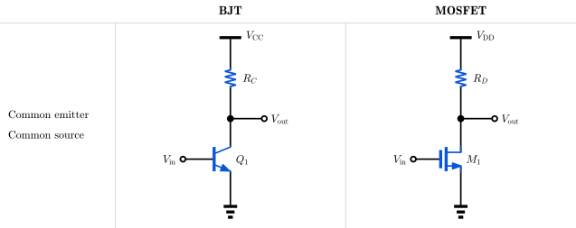
BJT |
MOSFET |
|
|---|---|---|
Given |
\(V_{CC}=2\,\mathrm{V}\), \(R_C=500\,\Omega\), \(V_{in}=V_{BE}=800\,\mathrm{mV}\), \(I_S=5\times10^{-17}\,\mathrm{A}\), \(\beta=100\), \(V_T=26\,\mathrm{mV}\) |
\(V_{DD}=1.8\,\mathrm{V}\), \(R_D=5\,\mathrm{k}\Omega\), \(V_{in}=V_{GS}=1\,\mathrm{V}\), \(\mu_nC_{ox}=100\,\mu\mathrm{A/V^2}\), \(W/L=2/0.18\), \(V_{TH}=0.4\,\mathrm{V}\) |
Is the device on? |
\(V_{BE}\approx0.8\,\mathrm{V}\): the base-emitter junction conducts |
\(V_{GS}-V_{TH}=0.6\,\mathrm{V}>0\): a channel exists |
Current, assuming the amplifying region |
\(I_C=I_S\,e^{V_{BE}/V_T}\) \(=1.153\,\mathrm{mA}\) |
\(I_D=\frac{1}{2}\mu_nC_{ox}\frac{W}{L}(V_{GS}-V_{TH})^2\) \(=200\,\mu\mathrm{A}\) |
Current into the input |
\(I_B=I_C/\beta\) \(=11.5\,\mu\mathrm{A}\) |
\(I_G=0\) |
Output voltage |
\(V_{out}=V_{CC}-I_CR_C\) \(=1.42\,\mathrm{V}\) |
\(V_{out}=V_{DD}-I_DR_D\) \(=800\,\mathrm{mV}\) |
Check the assumption |
active if \(V_{out}\geq V_{in}\): \(1.42\geq0.8\), true |
saturated if \(V_{out}\geq V_{in}-V_{TH}\): \(0.8\geq0.6\), true |
Largest load resistor |
\(R_C\leq\dfrac{V_{CC}-V_{BE}}{I_C}\) \(=1.04\,\mathrm{k}\Omega\) |
\(R_D\leq\dfrac{V_{DD}-V_{GS}+V_{TH}}{I_D}\) \(=6\,\mathrm{k}\Omega\) |
Data and results: Razavi, Example 4.7 (BJT); Razavi, Example 6.6 (MOSFET).
In the books |
BJT |
MOSFET |
|---|---|---|
Razavi, worked examples |
4.5, 4.7, 4.15–4.17, 5.5–5.9, 5.15–5.18, 5.47 |
6.6, 6.8, 6.15 |
Razavi, problems |
4.9, 4.10, 4.14–4.17, 4.26, 4.32–4.42, 4.45, 4.48, 4.51–4.56, 5.7, 5.9, 5.11, 5.12, 5.18, 5.19, 5.25, 5.26, 5.28, 5.30–5.33, 9.2, 9.3, 9.35 |
6.19, 6.20, 6.22, 6.24, 6.25, 6.30, 6.39–6.43, 7.1, 7.9, 7.13, 9.15, 9.36, 9.37 |
Sedra/Smith, exercises |
4.6, 4.8, 4.9, 4.13, 4.14, 4.19–4.22, 4.24, 4.25, 4.29–4.32 |
5.4, 5.7, 5.11, 5.14, 5.15, 5.17, 6.1, 6.32, 7.20 |
Sedra/Smith, problems |
4.1, 4.7, 4.8, 4.23, 4.25, 4.28, 4.29, 4.35, 4.36, 4.38–4.40, 4.46, 4.51–4.55, 4.57–4.60, 4.63, 4.64, 4.66, 4.67, 4.69, 6.17, 6.21, 6.100, 6.108, 6.109, 6.115 |
5.4, 5.5, 5.20, 5.24, 5.25, 5.28, 5.32, 5.39, 5.42, 5.47, 5.48, 5.51, 5.57, 5.58, 5.60, 6.1, 6.94, 7.37, 7.74 |
Device Law and Scaling#
One point of the characteristic is known. Find the current at another control voltage, or the control voltage for another current, and what a larger device changes.
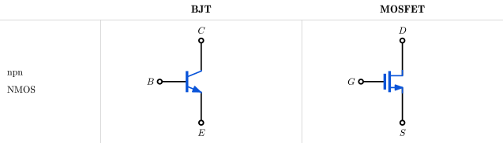
BJT |
MOSFET |
|
|---|---|---|
Given |
\(I_C=1\,\mathrm{mA}\) at \(V_{BE}=700\,\mathrm{mV}\), \(V_T=25\,\mathrm{mV}\) |
\(k_n=k_n^\prime\,W/L=4\,\mathrm{mA/V^2}\), \(V_t=0.5\,\mathrm{V}\), \(V_{GS}=1\,\mathrm{V}\) |
Law in the amplifying region |
\(I_C=I_S\,e^{V_{BE}/V_T}\) |
\(I_D=\frac{1}{2}k_n(V_{GS}-V_t)^2\) |
The known point |
\(I_S=I_C\,e^{-V_{BE}/V_T}\) \(=6.9\times10^{-16}\,\mathrm{A}\) |
\(V_{OV}=V_{GS}-V_t=0.5\,\mathrm{V}\), \(I_D=500\,\mu\mathrm{A}\) |
Control voltage for another current |
\(V_{BE2}=V_{BE1}+V_T\ln\dfrac{I_{C2}}{I_{C1}}\) |
\(V_{GS2}=V_t+V_{OV1}\sqrt{\dfrac{I_{D2}}{I_{D1}}}\) |
Ten times the current |
\(700\,\mathrm{mV}+V_T\ln10\) \(=758\,\mathrm{mV}\) |
\(0.5\,\mathrm{V}+0.5\,\mathrm{V}\cdot\sqrt{10}\) \(=2.08\,\mathrm{V}\) |
A tenth of the current |
\(700\,\mathrm{mV}-V_T\ln10\) \(=642\,\mathrm{mV}\) |
\(0.5\,\mathrm{V}+0.5\,\mathrm{V}/\sqrt{10}\) \(=658\,\mathrm{mV}\) |
A device \(n\) times as large |
\(I_S\rightarrow nI_S\): \(n\) times the current at the same \(V_{BE}\) |
\(W/L\rightarrow nW/L\): \(n\) times the current at the same \(V_{GS}\) |
Where the law holds |
active region: \(V_{CE}\geq V_{BE}\) |
saturation: \(V_{DS}\geq V_{OV}=0.5\,\mathrm{V}\) |
Data and results: Sedra/Smith, Exercise 4.1 (BJT); Sedra/Smith, Problem 5.12 (MOSFET).
In the books |
BJT |
MOSFET |
|---|---|---|
Razavi, worked examples |
4.2–4.4, 4.6, 4.13 |
6.1, 6.5, 6.12 |
Razavi, problems |
4.4–4.8, 4.12, 4.13 |
6.1, 6.3, 6.6, 6.7, 6.9–6.11, 6.13, 6.14, 6.23, 7.10, 7.12 |
Sedra/Smith, exercises |
4.1–4.5, 4.7, 4.10, 4.11, 4.15 |
5.1–5.3, 5.5 |
Sedra/Smith, problems |
4.2–4.6, 4.9–4.19, 4.22, 4.24, 4.32, 4.43, 6.30 |
5.1–5.3, 5.8, 5.10, 5.12–5.18, 5.27, 5.29, 5.33, 5.40, 5.41, 5.46, 5.63, 5.67 |
Small-Signal Parameters#
The bias current is known. Find the transconductance, the input and output resistances of the device and its intrinsic gain, and draw the small-signal model.
BJT |
MOSFET |
|
|---|---|---|
Given |
\(I_C=1\,\mathrm{mA}\), \(\beta=100\), \(V_A=15\,\mathrm{V}\), \(V_T=26\,\mathrm{mV}\) |
\(I_D=0.5\,\mathrm{mA}\), \(\mu_nC_{ox}=100\,\mu\mathrm{A/V^2}\), \(W/L=10\), \(\lambda=0.1\,\mathrm{V^{-1}}\) |
Transconductance |
\(g_m=\dfrac{I_C}{V_T}\) \(=\dfrac{1}{26\,\Omega}\) \(=38.5\,\mathrm{mS}\) |
\(g_m=\sqrt{2\mu_nC_{ox}\frac{W}{L}I_D}\) \(=\dfrac{1}{1\,\mathrm{k}\Omega}\) \(=1\,\mathrm{mS}\) |
What sets it |
the current alone |
current and size: \(g_m=\dfrac{2I_D}{V_{GS}-V_{TH}}\), \(V_{GS}-V_{TH}=1\,\mathrm{V}\) |
Resistance seen at the input |
\(r_\pi=\dfrac{\beta}{g_m}\) \(=2.6\,\mathrm{k}\Omega\) |
infinite: no gate current |
Output resistance |
\(r_O=\dfrac{V_A}{I_C}\) \(=15\,\mathrm{k}\Omega\) |
\(r_O=\dfrac{1}{\lambda I_D}\) \(=20\,\mathrm{k}\Omega\) |
Intrinsic gain |
\(g_mr_O=\dfrac{V_A}{V_T}\) \(=577\) |
\(g_mr_O=\dfrac{2}{\lambda(V_{GS}-V_{TH})}\) \(=20\) |
Model |
\(r_\pi\) from B to E, source \(g_mv_\pi\) and \(r_O\) from C to E |
gate open, source \(g_mv_{gs}\) and \(r_O\) from D to S |
Data and results: Razavi, Example 4.14 (BJT); Razavi, Example 6.14 (MOSFET).
In the books |
BJT |
MOSFET |
|---|---|---|
Razavi, worked examples |
4.8–4.10, 4.14, 4.20, 4.21 |
6.2, 6.3, 6.9–6.11, 6.13, 6.14 |
Razavi, problems |
4.18–4.25, 4.27–4.31, 4.43, 4.44, 4.46, 4.47, 4.49, 4.50, 5.8, 5.10, 5.27, 5.29 |
6.8, 6.15–6.18, 6.21, 6.28, 6.31–6.38, 6.44, 6.45, 7.11, 7.14, 7.16 |
Sedra/Smith, exercises |
4.16–4.18, 6.12–6.15, 6.17, 6.18 |
5.6, 6.5–6.9, 7.7 |
Sedra/Smith, problems |
4.20, 4.26, 4.27, 4.33, 4.34, 4.44, 4.45, 4.47–4.49, 6.20, 6.22, 6.29, 6.31, 6.42–6.45, 6.48–6.51, 6.55, 7.26, 7.35, 7.38, 7.41 |
5.9, 5.11, 5.19, 5.21–5.23, 5.26, 5.30, 5.31, 5.34–5.38, 5.64, 5.68, 5.69, 6.39, 6.41, 7.26, 7.28, 7.29, 7.36, 7.38–7.45 |
Bias#
Divider Bias with Degeneration#
A resistive divider sets the base or gate voltage, and a resistor in the emitter or source makes the current insensitive to the device. Find the bias current and check the region. A design problem runs the same lines backwards: choose the current and the drop across the lower resistor, then the resistors.
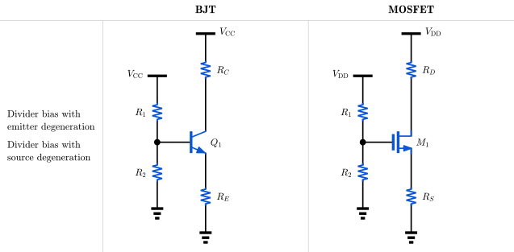
BJT |
MOSFET |
|
|---|---|---|
Given |
\(V_{CC}=2.5\,\mathrm{V}\), \(R_1=16\,\mathrm{k}\Omega\), \(R_2=9\,\mathrm{k}\Omega\), \(R_C=1\,\mathrm{k}\Omega\), \(R_E=100\,\Omega\), \(I_S=5\times10^{-17}\,\mathrm{A}\), \(\beta=100\) |
\(V_{DD}=1.8\,\mathrm{V}\), \(R_1=4\,\mathrm{k}\Omega\), \(R_2=10\,\mathrm{k}\Omega\), \(R_S=1\,\mathrm{k}\Omega\), \(\mu_nC_{ox}=100\,\mu\mathrm{A/V^2}\), \(W/L=5/0.18\), \(V_{TH}=0.5\,\mathrm{V}\) |
Voltage of the divider |
\(V_X\approx\dfrac{R_2}{R_1+R_2}V_{CC}\) \(=900\,\mathrm{mV}\) |
\(V_X=\dfrac{R_2}{R_1+R_2}V_{DD}\) \(=1.286\,\mathrm{V}\) |
Loop through the input |
\(V_X=V_{BE}+I_ER_E\) |
\(V_X=V_{GS}+I_DR_S\) |
Device law |
\(V_{BE}=V_T\ln\dfrac{I_C}{I_S}\) |
\(I_D=\frac{1}{2}\mu_nC_{ox}\frac{W}{L}(V_{GS}-V_{TH})^2\) |
Solve |
guess \(V_{BE}=0.8\,\mathrm{V}\): \(I_C\approx\dfrac{V_X-V_{BE}}{R_E}\) \(=1\,\mathrm{mA}\) |
quadratic in \(V_{GS}\): \(V_{GS}=974\,\mathrm{mV}\), \(I_D=312\,\mu\mathrm{A}\) |
Check the solution |
\(V_{BE}=V_T\ln(I_C/I_S)\) \(=796\,\mathrm{mV}\): the guess holds |
\(V_{GS}+I_DR_S\) \(=1.286\,\mathrm{V}\) \(=V_X\) |
Is the divider loaded? |
\(I_B=10\,\mu\mathrm{A}\) against \(100\,\mu\mathrm{A}\) in the divider: barely |
no: \(I_G=0\) |
Region |
\(V_Y=V_{CC}-I_CR_C\) \(=1.5\,\mathrm{V}\) \(\geq V_X\): active |
saturated if \(V_D\geq V_X-V_{TH}\): \(R_D\leq3.25\,\mathrm{k}\Omega\) |
Data and results: Razavi, Example 5.10 (BJT); Razavi, Example 7.1 (MOSFET).
In the books |
BJT |
MOSFET |
|---|---|---|
Razavi, worked examples |
5.10–5.12, 5.14 |
6.7, 7.1, 7.2 |
Razavi, problems |
4.11, 5.13, 5.14, 5.16, 5.17 |
6.26, 7.2–7.5, 7.7, 7.29 |
Sedra/Smith, exercises |
4.12, 4.23, 4.26–4.28, 6.35, 6.41 |
5.8, 5.12, 5.13, 6.33, 6.38 |
Sedra/Smith, problems |
4.21, 4.30, 4.31, 4.50, 4.56, 4.61, 4.62, 4.65, 4.68, 6.96, 6.97, 6.99, 6.110–6.112 |
5.43, 5.45, 5.50, 5.52–5.56, 6.40, 6.91–6.93, 6.101–6.105, 8.8 |
Self-Bias#
A resistor from the output node back to the input sets the bias. Find the current. The transistor cannot leave its amplifying region.
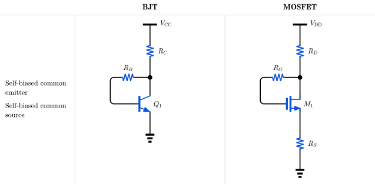
BJT |
MOSFET |
|
|---|---|---|
Given |
\(V_{CC}=2.5\,\mathrm{V}\), \(R_C=1\,\mathrm{k}\Omega\), \(R_B=10\,\mathrm{k}\Omega\), \(I_S=5\times10^{-17}\,\mathrm{A}\), \(\beta=100\) |
\(V_{DD}=1.8\,\mathrm{V}\), \(R_D=1\,\mathrm{k}\Omega\), \(R_G=20\,\mathrm{k}\Omega\), \(R_S=200\,\Omega\), \(\mu_nC_{ox}=100\,\mu\mathrm{A/V^2}\), \(W/L=5/0.18\), \(V_{TH}=0.5\,\mathrm{V}\) |
Current in the feedback resistor |
\(I_B=I_C/\beta\) |
none: \(V_G=V_D\) |
Loop from the supply to ground |
\(V_{CC}=R_CI_C+R_BI_B+V_{BE}\) |
\(V_{DD}=R_DI_D+V_{GS}+R_SI_D\) |
Solve |
guess \(V_{BE}=0.8\,\mathrm{V}\): \(I_C=\dfrac{V_{CC}-V_{BE}}{R_C+R_B/\beta}\) \(=1.545\,\mathrm{mA}\) |
with \(I_D=\frac{1}{2}\mu_nC_{ox}\frac{W}{L}(V_{GS}-V_{TH})^2\): \(I_D=556\,\mu\mathrm{A}\) |
Control voltage |
\(V_{BE}=V_T\ln(I_C/I_S)\) \(=807.6\,\mathrm{mV}\): the guess holds |
\(V_{GS}=V_{DD}-(R_D+R_S)I_D\) \(=1.133\,\mathrm{V}\) |
Output node |
\(V_Y=V_{BE}+R_BI_B\) \(=962\,\mathrm{mV}\) |
\(V_D=V_{DD}-R_DI_D\) \(=1.244\,\mathrm{V}\) |
Region |
\(V_Y>V_{BE}\) by \(R_BI_B\): always active |
\(V_D=V_G>V_G-V_{TH}\): always saturated |
Data and results: Razavi, Example 5.13 (BJT); Razavi, Example 7.3 (MOSFET).
In the books |
BJT |
MOSFET |
|---|---|---|
Razavi, worked examples |
5.13 |
7.3 |
Razavi, problems |
5.20–5.24 |
6.27, 6.29, 7.6, 7.8 |
Sedra/Smith, exercises |
6.37 |
5.9, 6.34 |
Sedra/Smith, problems |
4.37, 6.98, 6.113, 6.114 |
5.59, 6.95, 6.106, 6.107 |
Amplifier Stages#
Common-Emitter and Common-Source Stage#
The input drives the base or gate, the output is taken at the collector or drain. Find the gain and the input and output resistances, then the gain with a load and with the resistance of the signal source.
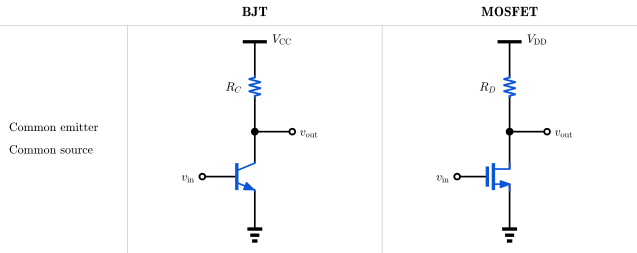
BJT |
MOSFET |
|
|---|---|---|
Given |
\(I_C=0.5\,\mathrm{mA}\), \(\beta=100\), \(R_C=10\,\mathrm{k}\Omega\), load \(R_L=5\,\mathrm{k}\Omega\), source \(R_{sig}=5\,\mathrm{k}\Omega\), \(V_T=25\,\mathrm{mV}\) |
\(I_D=0.25\,\mathrm{mA}\), \(V_{OV}=0.25\,\mathrm{V}\), \(R_D=20\,\mathrm{k}\Omega\), load \(R_L=20\,\mathrm{k}\Omega\) |
Transconductance |
\(g_m=\dfrac{I_C}{V_T}\) \(=20\,\mathrm{mA/V}\) |
\(g_m=\dfrac{2I_D}{V_{OV}}\) \(=2\,\mathrm{mA/V}\) |
Input resistance |
\(R_{in}=r_\pi=\dfrac{\beta}{g_m}\) \(=5\,\mathrm{k}\Omega\) |
\(R_{in}=\infty\) |
Gain without load |
\(A_{vo}=-g_mR_C\) \(=-200\) |
\(A_{vo}=-g_mR_D\) \(=-40\) |
Output resistance |
\(R_{out}=R_C\) \(=10\,\mathrm{k}\Omega\) |
\(R_{out}=R_D\) \(=20\,\mathrm{k}\Omega\) |
Gain with the load |
\(A_v=-g_m(R_C\parallel R_L)\) \(=-66.7\) |
\(A_v=-g_m(R_D\parallel R_L)\) \(=-20\) |
Gain from the signal source |
\(G_v=\dfrac{R_{in}}{R_{in}+R_{sig}}A_v\) \(=-33.3\) |
\(G_v=A_v\) \(=-20\): nothing is lost at the gate |
With the output resistance of the device |
\(R_C\rightarrow R_C\parallel r_O\) |
\(R_D\rightarrow R_D\parallel r_O\) |
Data and results: Sedra/Smith, Exercise 6.22 (BJT); Sedra/Smith, Exercise 6.21 (MOSFET).
In the books |
BJT |
MOSFET |
|---|---|---|
Razavi, worked examples |
4.11, 4.12, 4.18, 5.20, 5.21 |
7.4, 9.7 |
Razavi, problems |
5.37, 10.1 |
7.17, 7.18, 7.34, 7.35 |
Sedra/Smith, exercises |
6.16, 6.20, 6.22 |
6.4, 6.21 |
Sedra/Smith, problems |
6.4–6.6, 6.14, 6.18, 6.19, 6.28, 6.33, 6.46, 6.52, 6.54, 6.62, 6.76, 6.88, 6.90 |
6.2, 6.9, 6.10, 6.12, 6.23, 6.37, 6.38, 6.60, 6.74, 6.75 |
Stage with Emitter or Source Degeneration#
A resistor in the emitter or source trades gain for linearity and, in the BJT, for input resistance. Find the gain, the input resistance and the largest input signal.
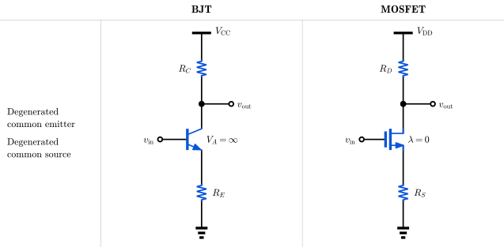
BJT |
MOSFET |
|
|---|---|---|
Given |
\(I_C=0.5\,\mathrm{mA}\), \(\beta=100\), \(R_E=350\,\Omega\), \(R_C\parallel R_L=10\,\mathrm{k}\Omega\), source \(R_{sig}=10\,\mathrm{k}\Omega\) |
\(g_m=2\,\mathrm{mA/V}\), \(R_S=1.5\,\mathrm{k}\Omega\), \(R_D\parallel R_L=10\,\mathrm{k}\Omega\) |
Resistance of the device itself |
\(r_e=\dfrac{V_T}{I_E}\approx\dfrac{1}{g_m}\) \(=50\,\Omega\) |
\(\dfrac{1}{g_m}\) \(=500\,\Omega\) |
Input resistance |
\(R_{in}=(\beta+1)(r_e+R_E)\) \(=40.4\,\mathrm{k}\Omega\) |
\(R_{in}=\infty\) |
Gain from the input |
\(A_v\approx-\dfrac{R_C\parallel R_L}{r_e+R_E}\) \(=-25\) |
\(A_v=-\dfrac{R_D\parallel R_L}{1/g_m+R_S}\) \(=-5\) |
Gain from the signal source |
\(G_v=-\dfrac{\beta(R_C\parallel R_L)}{R_{sig}+(\beta+1)(r_e+R_E)}\) \(=-19.8\) |
\(G_v=A_v\) \(=-5\) |
Share of the input across the device |
\(\dfrac{v_\pi}{v_{in}}=\dfrac{r_e}{r_e+R_E}\) \(=\dfrac{1}{8}\) |
\(\dfrac{v_{gs}}{v_{in}}=\dfrac{1}{1+g_mR_S}\) \(=\dfrac{1}{4}\) |
Largest source signal |
\(v_\pi\leq10\,\mathrm{mV}\): \(v_{sig}\leq99.8\,\mathrm{mV}\) |
\(v_{gs}\leq50\,\mathrm{mV}\): \(v_{sig}\leq200\,\mathrm{mV}\) |
Data and results: Sedra/Smith, Exercise 6.24 (BJT); Sedra/Smith, Exercise 6.23 (MOSFET).
In the books |
BJT |
MOSFET |
|---|---|---|
Razavi, worked examples |
5.22–5.25, 5.27 |
7.8, 7.20, 7.21 |
Razavi, problems |
5.40, 5.41, 5.44, 5.45 |
7.31, 7.32 |
Sedra/Smith, exercises |
6.24, 6.43 |
6.23, 6.40 |
Sedra/Smith, problems |
6.57, 6.64, 6.70, 6.80, 6.81, 6.121 |
6.25, 6.63, 6.78, 6.79 |
Stage with a Transistor as its Load#
The load is a current source made of a second transistor, so the gain is set by the output resistances of the two devices. Find the intrinsic gain and the gain of the stage.
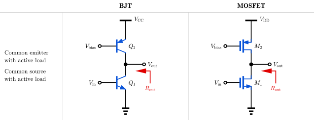
BJT |
MOSFET |
|
|---|---|---|
Given |
\(I=100\,\mu\mathrm{A}\), \(\beta=100\), \(\lvert V_A\rvert =50\,\mathrm{V}\) for both devices, \(V_T=25\,\mathrm{mV}\) |
\(I=100\,\mu\mathrm{A}\), \(\mu_nC_{ox}=387\,\mu\mathrm{A/V^2}\), \(W/L=7.2/0.36\), \(V_{An}^\prime=5\,\mathrm{V/\mu m}\), \(\lvert V_{Ap}^\prime\rvert =6\,\mathrm{V/\mu m}\) |
Transconductance |
\(g_{m1}=\dfrac{I}{V_T}\) \(=4\,\mathrm{mA/V}\) |
\(g_{m1}=\sqrt{2\mu_nC_{ox}\frac{W}{L}I}\) \(=1.24\,\mathrm{mA/V}\) |
Input resistance |
\(r_{\pi1}=\dfrac{\beta}{g_{m1}}\) \(=25\,\mathrm{k}\Omega\) |
infinite |
Output resistance of the amplifying device |
\(r_{O1}=\dfrac{V_A}{I}\) \(=500\,\mathrm{k}\Omega\) |
\(r_{O1}=\dfrac{V_{An}^\prime L}{I}\) \(=18\,\mathrm{k}\Omega\) |
Intrinsic gain |
\(g_{m1}r_{O1}=\dfrac{V_A}{V_T}\) \(=2000\) |
\(g_{m1}r_{O1}\) \(=22.4\) |
Output resistance of the load |
\(r_{O2}=\dfrac{\lvert V_A\rvert }{I}\) \(=500\,\mathrm{k}\Omega\) |
\(r_{O2}=\dfrac{\lvert V_{Ap}^\prime\rvert L}{I}\) \(=21.6\,\mathrm{k}\Omega\) |
Output resistance of the stage |
\(R_{out}=r_{O1}\parallel r_{O2}\) \(=250\,\mathrm{k}\Omega\) |
\(R_{out}=r_{O1}\parallel r_{O2}\) \(=9.82\,\mathrm{k}\Omega\) |
Gain |
\(A_v=-g_{m1}(r_{O1}\parallel r_{O2})\) \(=-1000\) |
\(A_v=-g_{m1}(r_{O1}\parallel r_{O2})\) \(=-12.2\) |
Data and results: Sedra/Smith, Exercise 7.9 (BJT); Sedra/Smith, Exercise 7.8 (MOSFET).
In the books |
BJT |
MOSFET |
|---|---|---|
Razavi, worked examples |
9.8 |
7.5–7.7, 7.19 |
Razavi, problems |
5.36, 5.38, 5.39 |
6.46, 7.20–7.28, 7.64 |
Sedra/Smith, exercises |
7.9 |
7.8 |
Sedra/Smith, problems |
7.27, 7.34 |
6.13, 6.26, 7.24, 7.30, 7.32, 7.33, 7.46, 7.48 |
Common-Base and Common-Gate Stage#
The input drives the emitter or source, the base or gate is held at a fixed voltage. The resistor in series with the input is the resistance of the signal source. Find the input resistance and the gain.
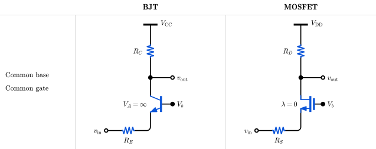
BJT |
MOSFET |
|
|---|---|---|
Given |
\(I_C=1\,\mathrm{mA}\), \(R_C=5\,\mathrm{k}\Omega\), load \(R_L=5\,\mathrm{k}\Omega\), source \(R_E=R_{sig}=5\,\mathrm{k}\Omega\), \(V_T=25\,\mathrm{mV}\) |
\(g_m=10\,\mathrm{mA/V}\) (\(I_D=1\,\mathrm{mA}\), \(V_{OV}=0.2\,\mathrm{V}\)), \(R_D=2\,\mathrm{k}\Omega\), source \(R_S=R_{sig}=100\,\Omega\) |
Input resistance |
\(R_{in}=r_e\approx\dfrac{1}{g_m}\) \(=25\,\Omega\) |
\(R_{in}=\dfrac{1}{g_m}\) \(=100\,\Omega\) |
Gain without load |
\(A_{vo}=g_mR_C\) \(=200\) |
\(A_{vo}=g_mR_D\) \(=20\) |
Output resistance |
\(R_{out}=R_C\) \(=5\,\mathrm{k}\Omega\) |
\(R_{out}=R_D\) \(=2\,\mathrm{k}\Omega\) |
Gain with the load |
\(A_v=g_m(R_C\parallel R_L)\) \(=100\) |
\(A_v=g_mR_D\) \(=20\) |
Gain from the signal source |
\(G_v=\dfrac{R_C\parallel R_L}{R_{sig}+r_e}\) \(=0.5\) |
\(G_v=\dfrac{R_D}{R_{sig}+1/g_m}\) \(=10\) |
What the source resistance costs |
\(\dfrac{r_e}{r_e+R_{sig}}\) \(=0.005\) of the signal reaches the emitter |
\(\dfrac{1/g_m}{1/g_m+R_{sig}}\) \(=0.5\): matched to the source |
Data and results: Sedra/Smith, Exercise 6.26 (BJT); Sedra/Smith, Exercise 6.25 (MOSFET).
In the books |
BJT |
MOSFET |
|---|---|---|
Razavi, worked examples |
5.35–5.37, 5.51, 5.52 |
7.12, 7.13 |
Razavi, problems |
5.54–5.57, 5.62, 5.64 |
7.42, 7.44, 7.47 |
Sedra/Smith, exercises |
6.19, 6.26, 6.27, 7.15–7.17 |
6.25, 7.11–7.14 |
Sedra/Smith, problems |
6.32, 6.35, 6.56, 6.66, 6.83, 6.84, 6.122, 7.54, 7.59, 7.60 |
6.65, 6.82, 6.128, 7.50, 7.53, 7.57, 7.58 |
Emitter Follower and Source Follower#
The output is taken at the emitter or source and follows the input. The resistor to ground is the load. Find the gain and the input and output resistances.
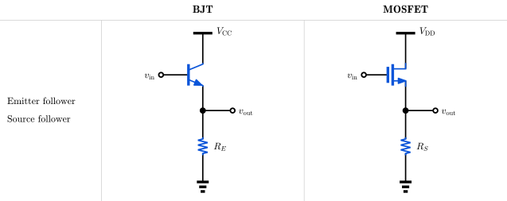
BJT |
MOSFET |
|
|---|---|---|
Given |
\(I_C=5\,\mathrm{mA}\), \(\beta=100\), load \(R_E=R_L=1\,\mathrm{k}\Omega\), source \(R_{sig}=10\,\mathrm{k}\Omega\), \(V_T=25\,\mathrm{mV}\) |
\(g_m=5\,\mathrm{mA/V}\) (\(I_D=0.625\,\mathrm{mA}\), \(V_{OV}=0.25\,\mathrm{V}\)), load \(R_S=R_L=1\,\mathrm{k}\Omega\) |
Resistance of the device itself |
\(r_e=\dfrac{V_T}{I_E}\) \(=5\,\Omega\) |
\(\dfrac{1}{g_m}\) \(=200\,\Omega\) |
Input resistance |
\(R_{in}=(\beta+1)(r_e+R_L)\) \(=101.5\,\mathrm{k}\Omega\) |
\(R_{in}=\infty\) |
Gain from the input |
\(A_v=\dfrac{R_L}{R_L+r_e}\) \(=0.995\) |
\(A_v=\dfrac{R_L}{R_L+1/g_m}\) \(=0.833\) |
Gain from the signal source |
\(G_v=\dfrac{(\beta+1)R_L}{R_{sig}+(\beta+1)(r_e+R_L)}\) \(=0.906\) |
\(G_v=A_v\) \(=0.833\) |
Output resistance |
\(R_{out}=r_e+\dfrac{R_{sig}}{\beta+1}\) \(=104\,\Omega\) |
\(R_{out}=\dfrac{1}{g_m}\) \(=200\,\Omega\) |
Gain without load |
\(1\) |
\(1\) |
Data and results: Sedra/Smith, Exercise 6.30 (BJT); Sedra/Smith, Exercise 6.29 (MOSFET).
In the books |
BJT |
MOSFET |
|---|---|---|
Razavi, worked examples |
5.43, 5.44, 5.46, 5.53 |
7.16 |
Razavi, problems |
5.65–5.68, 5.70, 5.71, 10.3 |
7.36, 7.49, 7.55, 10.3 |
Sedra/Smith, exercises |
6.30, 6.45 |
6.28, 6.29, 7.25 |
Sedra/Smith, problems |
6.53, 6.68, 6.86, 6.87, 6.123, 6.134, 6.135 |
6.67, 6.85, 6.89, 7.80 |
Resistance Seen at a Node#
Find the small-signal resistance looking into a terminal. The diode-connected transistor is the standard case: apply a test voltage, add up the currents, divide.
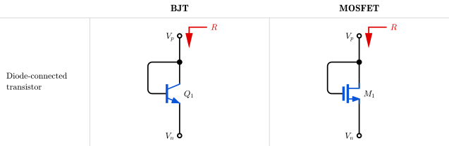
BJT |
MOSFET |
|
|---|---|---|
Given |
the device of Small-Signal Parameters: \(g_m=1/(26\,\Omega)\), \(r_\pi=2.6\,\mathrm{k}\Omega\), \(r_O=15\,\mathrm{k}\Omega\) |
the device of Small-Signal Parameters: \(g_m=1/(1\,\mathrm{k}\Omega)\), \(r_O=20\,\mathrm{k}\Omega\) |
Test voltage across the device |
\(v_\pi=v_x\) |
\(v_{gs}=v_x\) |
Current drawn |
\(i_x=\dfrac{v_x}{r_\pi}+g_mv_x+\dfrac{v_x}{r_O}\) |
\(i_x=g_mv_x+\dfrac{v_x}{r_O}\) |
Resistance |
\(R=\dfrac{v_x}{i_x}=\dfrac{1}{g_m}\parallel r_\pi\parallel r_O\) \(=25.7\,\Omega\) |
\(R=\dfrac{v_x}{i_x}=\dfrac{1}{g_m}\parallel r_O\) \(=952\,\Omega\) |
To a good approximation |
\(R\approx\dfrac{1}{g_m}\) \(=26\,\Omega\) |
\(R\approx\dfrac{1}{g_m}\) \(=1\,\mathrm{k}\Omega\) |
Into the other terminals, by inspection |
emitter: \(\dfrac{1}{g_m}\parallel r_\pi\); base: \(r_\pi\); collector: \(r_O\) |
source: \(\dfrac{1}{g_m}\); gate: \(\infty\); drain: \(r_O\) |
Data and results: Razavi, Example 4.19 (BJT); Razavi, Example 6.16 (MOSFET).
In the books |
BJT |
MOSFET |
|---|---|---|
Razavi, worked examples |
4.19, 5.2–5.4, 5.28, 5.29, 5.38, 5.39 |
6.16, 7.9, 7.10 |
Razavi, problems |
5.3–5.6, 5.48–5.50 |
7.15, 7.33 |
Sedra/Smith, exercises |
7.18 |
6.11 |
Sedra/Smith, problems |
6.34, 7.55, 7.56, 7.61 |
7.51, 7.52 |
Complete Stage with Bias, Source and Load#
The stage is biased by a divider, driven by a source with resistance and loaded by a resistor, with capacitors between them. For signals the supply and the capacitors are short circuits, which leaves the circuit drawn here; the resistor in the emitter or source is bypassed. Find the input resistance, the overall gain and the output resistance. Design problems, and cascades of two stages, use the same lines stage by stage.
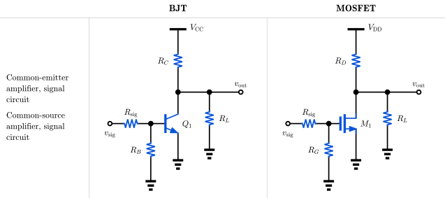
BJT |
MOSFET |
|
|---|---|---|
Given |
\(g_m=20\,\mathrm{mA/V}\), \(r_\pi=5\,\mathrm{k}\Omega\), \(r_O=200\,\mathrm{k}\Omega\), divider \(182\,\mathrm{k}\Omega\) and \(100\,\mathrm{k}\Omega\), \(R_C=18\,\mathrm{k}\Omega\), \(R_L=20\,\mathrm{k}\Omega\), \(R_{sig}=10\,\mathrm{k}\Omega\) |
\(g_m=2\,\mathrm{mA/V}\), \(r_O=200\,\mathrm{k}\Omega\), divider \(5\,\mathrm{M}\Omega\) and \(2.5\,\mathrm{M}\Omega\), \(R_D=18\,\mathrm{k}\Omega\), \(R_L=20\,\mathrm{k}\Omega\), \(R_{sig}=100\,\mathrm{k}\Omega\) |
Bias resistors, in parallel for signals |
\(R_B=R_{B1}\parallel R_{B2}\) \(=64.5\,\mathrm{k}\Omega\) |
\(R_G=R_{G1}\parallel R_{G2}\) \(=1.67\,\mathrm{M}\Omega\) |
Input resistance |
\(R_{in}=R_B\parallel r_\pi\) \(=4.64\,\mathrm{k}\Omega\) |
\(R_{in}=R_G\) \(=1.67\,\mathrm{M}\Omega\) |
Share of the source that reaches the input |
\(\dfrac{R_{in}}{R_{in}+R_{sig}}\) \(=0.317\) |
\(\dfrac{R_{in}}{R_{in}+R_{sig}}\) \(=0.943\) |
Resistance at the output node |
\(r_O\parallel R_C\parallel R_L\) \(=9.05\,\mathrm{k}\Omega\) |
\(r_O\parallel R_D\parallel R_L\) \(=9.05\,\mathrm{k}\Omega\) |
Overall gain |
\(G_v=-\dfrac{R_{in}}{R_{in}+R_{sig}}\,g_m(r_O\parallel R_C\parallel R_L)\) \(=-57.3\) |
\(G_v=-\dfrac{R_{in}}{R_{in}+R_{sig}}\,g_m(r_O\parallel R_D\parallel R_L)\) \(=-17.1\) |
Output resistance |
\(R_{out}=R_C\parallel r_O\) \(=16.5\,\mathrm{k}\Omega\) |
\(R_{out}=R_D\parallel r_O\) \(=16.5\,\mathrm{k}\Omega\) |
Data and results: Sedra/Smith, Exercises 6.41 and 6.42 (BJT); Sedra/Smith, Exercises 6.38 and 6.39 (MOSFET).
In the books |
BJT |
MOSFET |
|---|---|---|
Razavi, worked examples |
5.19, 5.26, 5.31–5.34, 5.40–5.42, 5.45, 5.48–5.50, 5.54 |
7.11, 7.14, 7.15, 7.17, 7.18, 7.22, 7.23 |
Razavi, problems |
5.15, 5.34, 5.35, 5.42, 5.43, 5.46, 5.47, 5.51–5.53, 5.58–5.61, 5.63, 5.69, 5.72–5.90 |
7.19, 7.30, 7.37–7.41, 7.43, 7.45, 7.46, 7.48, 7.50–7.54, 7.56–7.63, 7.65–7.73 |
Sedra/Smith, exercises |
6.3, 6.31, 6.36, 6.42, 6.44 |
6.2, 6.10, 6.39 |
Sedra/Smith, problems |
6.7, 6.15, 6.16, 6.36, 6.47, 6.69, 6.77, 6.119, 6.120, 6.129–6.133, 6.136 |
6.3, 6.8, 6.11, 6.24, 6.27, 6.61, 6.116–6.118, 6.124, 6.125, 6.127, 7.31, 7.47, 7.49 |
Cascodes and Current Mirrors#
Cascode#
A second transistor on top of the first multiplies the output resistance. Find the output resistance of the stack and the gain it gives as an amplifier. Each half of a cascode differential stage is this circuit.
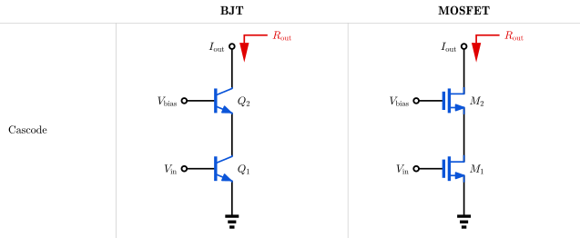
BJT |
MOSFET |
|
|---|---|---|
Given |
\(I_C=1\,\mathrm{mA}\), \(\beta=100\), \(V_A=5\,\mathrm{V}\), \(V_T=26\,\mathrm{mV}\), both devices alike |
\(I_D=0.5\,\mathrm{mA}\), \(\mu_nC_{ox}=100\,\mu\mathrm{A/V^2}\), \(W/L=15.6\), \(\lambda=0.1\,\mathrm{V^{-1}}\), both devices alike |
Transconductance |
\(g_m=\dfrac{I_C}{V_T}\) \(=\dfrac{1}{26\,\Omega}\) |
\(g_m=\sqrt{2\mu_nC_{ox}\frac{W}{L}I_D}\) \(=\dfrac{1}{800\,\Omega}\) |
Output resistance of one device |
\(r_O=\dfrac{V_A}{I_C}\) \(=5\,\mathrm{k}\Omega\) |
\(r_O=\dfrac{1}{\lambda I_D}\) \(=20\,\mathrm{k}\Omega\) |
Resistance under the upper device |
\(r_{O1}\parallel r_{\pi2}\) \(=1.71\,\mathrm{k}\Omega\) |
\(r_{O1}\) \(=20\,\mathrm{k}\Omega\) |
Output resistance of the stack |
\(R_{out}\approx g_{m2}r_{O2}(r_{O1}\parallel r_{\pi2})\) \(=329\,\mathrm{k}\Omega\) |
\(R_{out}\approx g_{m2}r_{O2}r_{O1}\) \(=500\,\mathrm{k}\Omega\) |
Against one device |
\(66\) times \(r_O\) |
\(25\) times \(r_O\) |
Limit |
\(R_{out}<\beta r_{O2}\) \(=500\,\mathrm{k}\Omega\), however large \(r_{O1}\) |
none: a third device multiplies again |
Gain with an ideal current-source load |
\(A_v\approx-g_{m1}R_{out}\) \(=-12650\) |
\(A_v\approx-g_{m1}R_{out}\) \(=-625\) |
Data and results: Razavi, Examples 9.1 and 9.9 (BJT); Razavi, Example 9.5 (MOSFET).
In the books |
BJT |
MOSFET |
|---|---|---|
Razavi, worked examples |
5.30, 9.1–9.4, 9.9, 9.10, 10.25 |
9.5, 9.6, 9.11, 10.26 |
Razavi, problems |
9.1, 9.4–9.11, 9.13, 9.20–9.27, 9.54, 9.55, 9.57, 9.58, 10.54–10.61, 10.88, 10.89 |
9.12–9.14, 9.16–9.20, 9.28–9.34, 9.56, 9.59, 10.62–10.64, 10.90 |
Sedra/Smith, exercises |
7.23, 7.24 |
7.19, 7.21, 7.22, 8.6 |
Sedra/Smith, problems |
7.68, 7.69, 7.77–7.79, 8.90, 8.98 |
6.126, 7.62–7.67, 7.70–7.73, 7.75, 7.76, 7.79, 8.9, 8.95 |
Current Mirror#
A diode-connected transistor turns the reference current into a voltage, and a second transistor turns the voltage back into a current. Find the copy, and what makes it differ from the ideal ratio. Circuits that distribute bias currents repeat this pair.
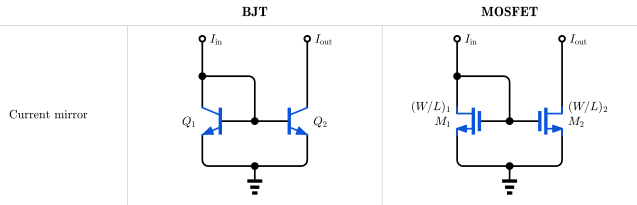
BJT |
MOSFET |
|
|---|---|---|
Given |
\(I_{in}=200\,\mu\mathrm{A}\); \(Q_1\) is 4 unit transistors, \(Q_2\) is 10; \(\beta=100\) |
\(I_{in}=0.3\,\mathrm{mA}\); \((W/L)_1=3\,(W/L)\), \((W/L)_2=5\,(W/L)\) |
Same control voltage |
\(V_{BE1}=V_{BE2}\) |
\(V_{GS1}=V_{GS2}\) |
Ratio of the currents |
\(\dfrac{I_{C2}}{I_{C1}}=\dfrac{I_{S2}}{I_{S1}}\), the ratio of the areas |
\(\dfrac{I_{D2}}{I_{D1}}=\dfrac{(W/L)_2}{(W/L)_1}\) |
Ideal copy |
\(I_{out}=\dfrac{10}{4}\cdot200\,\mu\mathrm{A}\) \(=500\,\mu\mathrm{A}\) |
\(I_{out}=\dfrac{5}{3}\cdot0.3\,\mathrm{mA}\) \(=500\,\mu\mathrm{A}\) |
Current lost at the input node |
\(I_{in}=I_{C1}+I_{B1}+I_{B2}\) |
none: \(I_{in}=I_{D1}\) |
Copy with that loss |
\(I_{out}=\dfrac{n\,I_{in}}{1+(1+n)/\beta}\), \(n=\dfrac{10}{4}\): \(483\,\mu\mathrm{A}\) |
\(I_{out}=500\,\mu\mathrm{A}\), unchanged |
Effect of the output voltage |
factor \(\dfrac{1+V_{CE2}/V_A}{1+V_{CE1}/V_A}\) |
factor \(\dfrac{1+\lambda V_{DS2}}{1+\lambda V_{DS1}}\) |
Output resistance |
\(r_{O2}\) |
\(r_{O2}\) |
Data and results: Razavi, Examples 9.15 and 9.16 (BJT); Razavi, Example 9.21 (MOSFET).
In the books |
BJT |
MOSFET |
|---|---|---|
Razavi, worked examples |
9.12–9.19 |
9.20, 9.21 |
Razavi, problems |
9.40–9.48, 9.60–9.64 |
9.49–9.53, 9.65–9.67 |
Sedra/Smith, exercises |
7.3–7.5 |
5.10, 7.1, 7.2, 7.6 |
Sedra/Smith, problems |
7.5–7.7, 7.14–7.20, 7.25, 7.87 |
5.44, 7.1–7.4, 7.9–7.13, 7.23 |
Differential Pairs#
Differential Pair: Bias and Input Range#
With equal inputs the tail current divides equally. Find the output level and the limit that keeps both transistors in the amplifying region, then how an input difference steers the current.
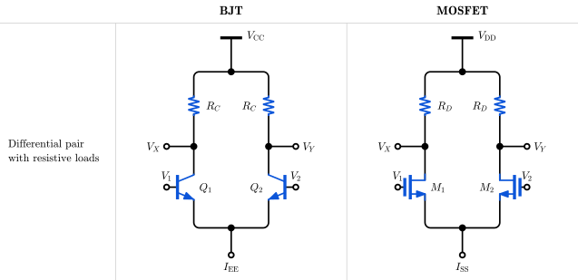
BJT |
MOSFET |
|
|---|---|---|
Given |
\(R_C=1\,\mathrm{k}\Omega\), \(I_{EE}=1\,\mathrm{mA}\), both inputs at \(V_{CM}\) |
\(V_{DD}=1.8\,\mathrm{V}\), \(I_{SS}=0.5\,\mathrm{mA}\), \(V_{TH}=0.5\,\mathrm{V}\), both inputs at \(V_{CM}=1.6\,\mathrm{V}\) |
Equal inputs |
\(I_{C1}=I_{C2}=\dfrac{I_{EE}}{2}\) \(=0.5\,\mathrm{mA}\) |
\(I_{D1}=I_{D2}=\dfrac{I_{SS}}{2}\) \(=0.25\,\mathrm{mA}\) |
Output level |
\(V_X=V_Y=V_{CC}-R_C\dfrac{I_{EE}}{2}\) \(=V_{CC}-0.5\,\mathrm{V}\) |
\(V_X=V_Y=V_{DD}-R_D\dfrac{I_{SS}}{2}\) |
Condition for the amplifying region |
\(V_X\geq V_{CM}\) |
\(V_X\geq V_{CM}-V_{TH}\) |
Result |
\(V_{CM}\leq V_{CC}-0.5\,\mathrm{V}\) |
\(R_D\leq\dfrac{V_{DD}-V_{CM}+V_{TH}}{I_{SS}/2}\) \(=2.8\,\mathrm{k}\Omega\) |
Unequal inputs steer the current |
\(I_{C1}-I_{C2}=I_{EE}\tanh\dfrac{V_1-V_2}{2V_T}\) |
\(I_{D1}-I_{D2}=\frac{1}{2}\mu_nC_{ox}\frac{W}{L}\Delta V\sqrt{\dfrac{4I_{SS}}{\mu_nC_{ox}W/L}-\Delta V^2}\), \(\Delta V=V_1-V_2\) |
All of it flows in one side |
beyond about \(4V_T\approx100\,\mathrm{mV}\) |
beyond \(\sqrt{2}\,(V_{GS}-V_{TH})\) at equal inputs |
Data and results: Razavi, Example 10.4 (BJT); Razavi, Example 10.15 (MOSFET).
In the books |
BJT |
MOSFET |
|---|---|---|
Razavi, worked examples |
10.3–10.5, 10.8, 10.9 |
10.15, 10.17, 10.19, 10.20 |
Razavi, problems |
10.14–10.26, 10.80 |
10.35–10.38, 10.40, 10.43–10.50, 10.84, 10.85 |
Sedra/Smith, exercises |
8.7–8.9 |
8.1–8.3 |
Sedra/Smith, problems |
8.26–8.28, 8.37–8.39, 8.41, 8.43 |
5.49, 8.1–8.3, 8.10–8.16, 8.94 |
Differential Pair: Differential Gain#
For a small difference between the inputs the tail node does not move, so each side is a common-emitter or common-source stage that amplifies half of the difference. Find the differential gain.
BJT |
MOSFET |
|
|---|---|---|
Given |
\(I_{EE}=1\,\mathrm{mA}\), \(R_C=10\,\mathrm{k}\Omega\), \(V_T=25\,\mathrm{mV}\), \(r_O\) neglected |
\(I_{SS}=0.8\,\mathrm{mA}\), \(k_n=20\,\mathrm{mA/V^2}\), \(R_D=5\,\mathrm{k}\Omega\), \(V_A=20\,\mathrm{V}\) |
Bias of each side |
\(I_C=\dfrac{I_{EE}}{2}\) \(=0.5\,\mathrm{mA}\) |
\(I_D=\dfrac{I_{SS}}{2}\) \(=0.4\,\mathrm{mA}\), \(V_{OV}=\sqrt{2I_D/k_n}\) \(=200\,\mathrm{mV}\) |
Transconductance |
\(g_m=\dfrac{I_C}{V_T}\) \(=20\,\mathrm{mA/V}\) |
\(g_m=\dfrac{2I_D}{V_{OV}}\) \(=4\,\mathrm{mA/V}\) |
Half circuit |
tail node at signal ground: a common-emitter stage with input \(\frac{1}{2}(v_1-v_2)\) |
tail node at signal ground: a common-source stage with input \(\frac{1}{2}(v_1-v_2)\) |
Output resistance of the device |
neglected |
\(r_O=\dfrac{V_A}{I_D}\) \(=50\,\mathrm{k}\Omega\) |
Differential gain |
\(\dfrac{v_X-v_Y}{v_1-v_2}=-g_mR_C\) \(=-200\) |
\(\dfrac{v_X-v_Y}{v_1-v_2}=-g_m(R_D\parallel r_O)\) \(=-18.2\) |
One output alone |
half of it: \(-100\) |
half of it: \(-9.09\) |
Resistance between the inputs |
\(R_{id}=2r_\pi\) |
infinite |
Data and results: Sedra/Smith, Exercise 8.10 (BJT); Sedra/Smith, Exercise 8.4 (MOSFET).
In the books |
BJT |
MOSFET |
|---|---|---|
Razavi, worked examples |
10.6, 10.7, 10.10, 10.11 |
10.16, 10.18, 10.21, 10.22 |
Razavi, problems |
10.27–10.29, 10.79, 10.82 |
10.39, 10.42, 10.51, 10.52, 10.86, 10.87 |
Sedra/Smith, exercises |
8.10 |
8.4 |
Sedra/Smith, problems |
8.30, 8.31, 8.34, 8.42, 8.47–8.49, 8.66 |
8.4–8.6, 8.17–8.22, 8.25 |
Differential Pair with Degeneration#
A resistor in each emitter or source widens the range of input difference that the pair handles linearly, at the cost of gain. Find the gain and the resistance between the inputs.
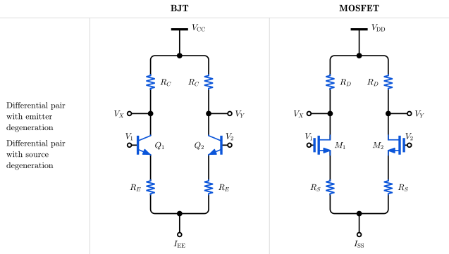
BJT |
MOSFET |
|
|---|---|---|
Given |
\(I_E=0.1\,\mathrm{mA}\) in each side, \(R_E=250\,\Omega\), \(R_C=10\,\mathrm{k}\Omega\), \(\beta=100\), \(V_T=25\,\mathrm{mV}\) |
\(g_m=4\,\mathrm{mA/V}\), \(R_S=250\,\Omega\) in each side, \(R_D=5\,\mathrm{k}\Omega\), \(r_O\) neglected |
Resistance of the device itself |
\(r_e=\dfrac{V_T}{I_E}\) \(=250\,\Omega\) |
\(\dfrac{1}{g_m}\) \(=250\,\Omega\) |
Half circuit |
a degenerated common-emitter stage |
a degenerated common-source stage |
Differential gain |
\(\dfrac{v_X-v_Y}{v_1-v_2}\approx-\dfrac{R_C}{r_e+R_E}\) \(=-20\) |
\(\dfrac{v_X-v_Y}{v_1-v_2}=-\dfrac{R_D}{1/g_m+R_S}\) \(=-10\) |
Without the resistors |
\(-\dfrac{R_C}{r_e}\) \(=-40\) |
\(-g_mR_D\) \(=-20\) |
Resistance between the inputs |
\(R_{id}=(\beta+1)(2r_e+2R_E)\) \(=101\,\mathrm{k}\Omega\) |
infinite |
Linear input range |
grows by \(1+R_E/r_e\) \(=2\) |
grows by \(1+g_mR_S\) \(=2\) |
Data and results: Sedra/Smith, Problem 8.53 (BJT); Sedra/Smith, Problem 8.7, with the pair of Exercise 8.4 (MOSFET).
In the books |
BJT |
MOSFET |
|---|---|---|
Razavi, worked examples |
10.12–10.14 |
10.23, 10.24 |
Razavi, problems |
10.30–10.34, 10.81, 10.83 |
10.53 |
Sedra/Smith, problems |
8.29, 8.32, 8.33, 8.35, 8.36, 8.45, 8.46, 8.51–8.54, 8.59, 8.67, 8.74 |
8.7, 8.23, 8.24 |
Differential Pair: Common-Mode Rejection#
A real tail source has a finite resistance, so a voltage common to both inputs reaches the outputs. With matched loads it appears equally at both; a mismatch turns part of it into a difference. Find the common-mode gain and the rejection ratio.
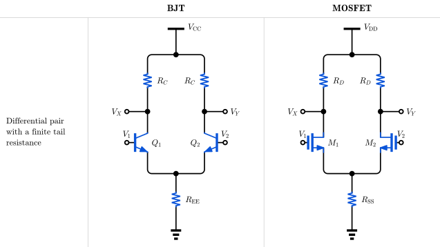
BJT |
MOSFET |
|
|---|---|---|
Given |
\(I_C=0.1\,\mathrm{mA}\) in each side, \(R_C=25\,\mathrm{k}\Omega\) with \(\Delta R_C/R_C=1\,\%\), \(R_{EE}=500\,\mathrm{k}\Omega\), \(V_T=25\,\mathrm{mV}\) |
\(g_m=4\,\mathrm{mA/V}\), \(R_D=5\,\mathrm{k}\Omega\) with \(\Delta R_D/R_D=1\,\%\), \(R_{SS}=25\,\mathrm{k}\Omega\) |
Transconductance |
\(g_m=\dfrac{I_C}{V_T}\) \(=4\,\mathrm{mA/V}\) |
\(g_m\) \(=4\,\mathrm{mA/V}\) |
Differential gain |
\(\lvert A_d\rvert =g_mR_C\) \(=100\) |
\(\lvert A_d\rvert =g_mR_D\) \(=20\) |
Half circuit for a common input |
each side carries \(2R_{EE}\) in its emitter |
each side carries \(2R_{SS}\) in its source |
Common input to each output |
\(-\dfrac{R_C}{r_e+2R_{EE}}\approx-\dfrac{R_C}{2R_{EE}}\) \(=-0.025\) |
\(-\dfrac{R_D}{1/g_m+2R_{SS}}\approx-\dfrac{R_D}{2R_{SS}}\) \(=-0.1\) |
Common input to the difference of the outputs |
\(\lvert A_{cm}\rvert =\dfrac{R_C}{2R_{EE}}\cdot\dfrac{\Delta R_C}{R_C}\) \(=2.5\times10^{-4}\) |
\(\lvert A_{cm}\rvert =\dfrac{R_D}{2R_{SS}}\cdot\dfrac{\Delta R_D}{R_D}\) \(=0.001\) |
Rejection ratio |
\(\dfrac{\lvert A_d\rvert }{\lvert A_{cm}\rvert }=\dfrac{2g_mR_{EE}}{\Delta R_C/R_C}\) \(=400000\) |
\(\dfrac{\lvert A_d\rvert }{\lvert A_{cm}\rvert }=\dfrac{2g_mR_{SS}}{\Delta R_D/R_D}\) \(=20000\) |
In decibels |
\(112\,\mathrm{dB}\) |
\(86\,\mathrm{dB}\) |
Data and results: Sedra/Smith, Problem 8.58 (BJT); Sedra/Smith, Exercise 8.11 (MOSFET).
In the books |
BJT |
MOSFET |
|---|---|---|
Razavi, worked examples |
10.27, 10.28 |
– |
Razavi, problems |
10.2, 10.11–10.13, 10.65, 10.66 |
10.67–10.70, 10.91 |
Sedra/Smith, exercises |
8.16 |
8.11–8.13, 8.15 |
Sedra/Smith, problems |
8.40, 8.44, 8.57, 8.58, 8.64, 8.65, 8.68, 8.69, 8.72, 8.73, 8.75, 8.76, 8.79–8.84 |
8.55, 8.56, 8.60–8.63, 8.70, 8.71, 8.77, 8.78, 8.80 |
Differential Pair with Current-Mirror Load#
A current mirror as the load brings the signal current of the left side to the single output, where it adds to that of the right side. Find the transconductance, the output resistance and the gain.
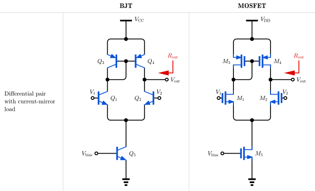
BJT |
MOSFET |
|
|---|---|---|
Given |
tail current \(0.8\,\mathrm{mA}\), \(\beta=160\), \(\lvert V_A\rvert =100\,\mathrm{V}\), \(V_T=25\,\mathrm{mV}\) |
tail current \(0.8\,\mathrm{mA}\), \(k_n=20\,\mathrm{mA/V^2}\), \(\lvert V_A\rvert =20\,\mathrm{V}\) |
Bias of each side |
\(I_C=0.4\,\mathrm{mA}\) |
\(I_D=0.4\,\mathrm{mA}\), \(V_{OV}=\sqrt{2I_D/k_n}\) \(=0.2\,\mathrm{V}\) |
Transconductance of each device |
\(g_m=\dfrac{I_C}{V_T}\) \(=16\,\mathrm{mA/V}\) |
\(g_m=\dfrac{2I_D}{V_{OV}}\) \(=4\,\mathrm{mA/V}\) |
Current into a shorted output |
\(g_m\frac{v_1-v_2}{2}\) from each side: \(G_m=g_m\) |
\(g_m\frac{v_1-v_2}{2}\) from each side: \(G_m=g_m\) |
Output resistance of each device |
\(r_O=\dfrac{\lvert V_A\rvert }{I_C}\) \(=250\,\mathrm{k}\Omega\) |
\(r_O=\dfrac{\lvert V_A\rvert }{I_D}\) \(=50\,\mathrm{k}\Omega\) |
Output resistance |
\(R_{out}=r_{O2}\parallel r_{O4}\) \(=125\,\mathrm{k}\Omega\) |
\(R_{out}=r_{O2}\parallel r_{O4}\) \(=25\,\mathrm{k}\Omega\) |
Gain |
\(A_d=G_mR_{out}\) \(=2000\) |
\(A_d=G_mR_{out}\) \(=100\) |
Resistance between the inputs |
\(R_{id}=2r_\pi\) \(=20\,\mathrm{k}\Omega\) |
infinite |
Data and results: Sedra/Smith, Exercise 8.18 (BJT); Sedra/Smith, Exercise 8.17 (MOSFET).
In the books |
BJT |
MOSFET |
|---|---|---|
Razavi, worked examples |
– |
10.29 |
Razavi, problems |
10.75, 10.92 |
10.71–10.74, 10.76–10.78, 10.93 |
Sedra/Smith, exercises |
8.14, 8.18 |
8.5, 8.17, 8.19 |
Sedra/Smith, problems |
8.50, 8.89, 8.99, 8.100 |
8.85–8.88, 8.91–8.93, 8.96, 8.97, 8.100–8.103, 8.116 |
In One of the Two Books Only#
These natures are asked of both transistors, but only in Sedra/Smith.
Nature |
BJT |
MOSFET |
|---|---|---|
Improved current mirrors: base-current compensation, cascode mirror, Wilson, Widlar |
7.8, 7.21, 7.22, 7.27, 7.28, 7.82, 7.84, 7.88, 7.89, 7.92–7.94 |
7.26, 7.81, 7.83, 7.85, 7.86, 7.90, 7.91, 7.94 |
Multistage amplifiers and op amps |
8.21, 8.22, 8.106–8.109, 8.114, 8.115 |
8.20, 8.104, 8.105, 8.110–8.113 |